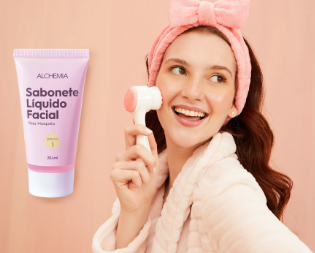
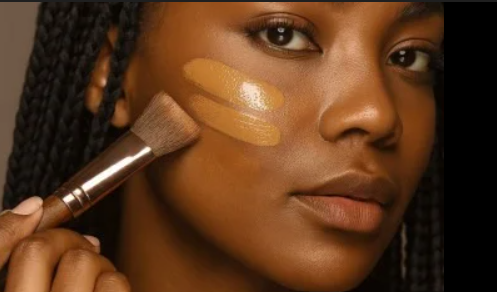
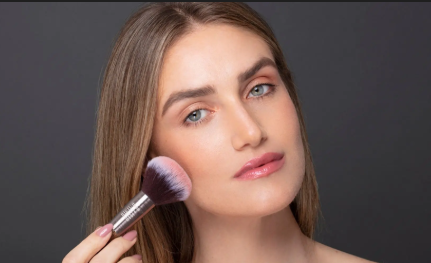
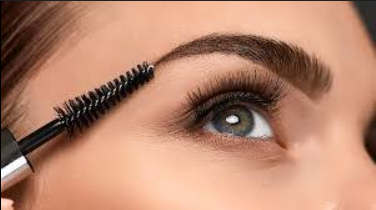
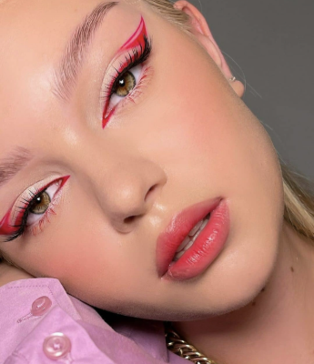
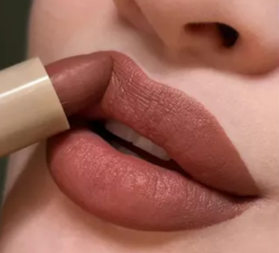

Como se maquiar??
Entenda a ordem dos produtos na maquiagem para seu visual
Preparação da Pele
A preparação ideal segue a ordem: hidratação, proteção solar (para o dia) e primer. O hidratante retém a água e conserva o visual, enquanto o protetor sela o skincare e protege a pele. Por fim, o primer finaliza o ciclo, podendo ser siliconado para disfarçar poros e oleosidade ou fluido para garantir maior fixação e luminosidade.

Base e Corretivo
Após a preparação, aplique produtos cremosos começando pelo corretivo em olheiras intensas, usando pincel e leves batidinhas. Em seguida, utilize uma esponja úmida para espalhar a base por todo o rosto, incluindo maxilar e orelhas. O segredo do acabamento invisível é esfumar o restante do produto em direção ao pescoço, garantindo um degradê natural e uniforme.

Blush, contorno, iluminador e pó
Priorize produtos cremosos como blush e contorno para garantir naturalidade, fácil esfumação e alta resistência em eventos longos. Em seguida, sele a pele com produtos em pó para fixar a maquiagem, aplicando o pó facial com pincel ou esponja de veludo sem excessos. Foque primeiro em áreas de acúmulo, como olhos e testa, finalizando com um esfumado delicado em todo o rosto.

Sobrancelhas
Antes de corrigir as sobrancelhas, limpe os pelos com uma haste flexível e demaquilante para remover o excesso de produtos. Em seguida, desenhe o formato desejado com sombra ou lápis, esfumando bem com uma escova própria para naturalidade. Finalize com uma camada fina de gel fixador, garantindo que o desenho e os fios permaneçam intactos no lugar.

Sombra, delineador e máscara de cílios
Comece esfumando as sombras com pincéis adequados, utilizando uma paleta versátil para construir o olhar. Em seguida, utilize uma caneta delineadora pela facilidade de manuseio e precisão no traço. Finalize com várias camadas de máscara de cílios, aplicando também nos fios inferiores para valorizar e abrir o olhar.

Batom, contorno labial e gloss
Finalize a maquiagem com o contorno labial, que delimita a boca e evita que o produto vaze pelas linhas finas ao longo do dia. Após o contorno, escolha entre aplicar apenas um gloss ou o batom de sua preferência. Essa etapa garante um acabamento profissional e maior durabilidade à cor escolhida.
